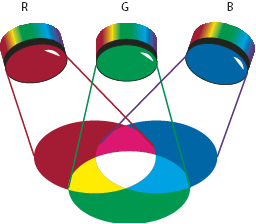

RGB
A large percentage of the visible spectrum can be represented by mixing red, green, and blue (RGB) colored light in various proportions and intensities. Where the colors overlap, they create cyan, magenta, and yellow.
RGB colors are called additive colors because you create white by adding R, G, and B together—that is, all light is reflected back to the eye. Additive colors are used for lighting, television, and computer monitors. Your monitor, for example, creates color by emitting light through red, green, and blue phosphors.

- R.
- Red
- G.
- Green
- B.
- Blue
You can work with color values using the RGB color mode, which is based on the RGB color model. In RGB mode, each of the RGB components can use a value ranging from 0 (black) to 255 (white). For example, a bright red color might have an R value of 246, a G value of 20, and a B value of 50. When the values of all three components are equal, the result is a shade of gray. When the value of all components is 255, the result is pure white; when all components have values of 0, the result is pure black.
Illustrator also includes a modified RGB color mode called Web Safe RGB, which includes only those RGB colors that are appropriate for use on the web.